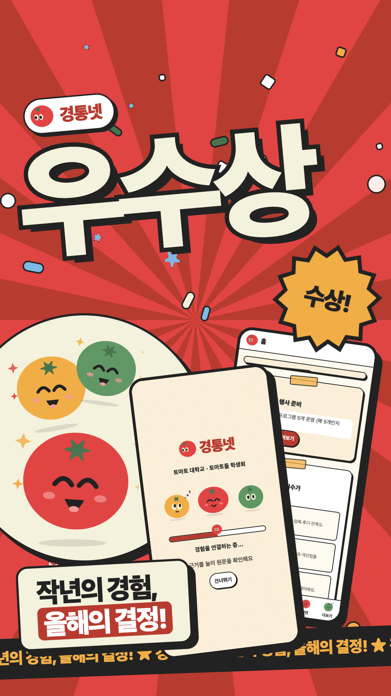

릴스 31편, 카드뉴스 14편
순천향대학교 홍보대사 ‘슈케터’와 삼성 갤럭시 서포터즈에서 소재를 찾고, 찍고, 편집해 올렸습니다. Kalibrr 마케팅 인턴십에서 참여한 릴스 9편도 함께 있습니다.
콘텐츠 목록을 불러오는 중입니다.
작년의 경험을 올해의 결정으로 잇는 학생자치 인수인계 서비스
학생회 자료는 해마다 남지만, 왜 그렇게 결정했는지는 남지 않습니다. 새 임원은 같은 질문을 다시 하고, 같은 시행착오를 반복합니다.
경통넷은 지난 기록과 다른 학생자치기구의 사례를 출처와 함께 찾아 주고, 우리 조건과 무엇이 다른지 보여 줍니다. 결정은 담당자가 하고, 그 이유와 결과를 다음 기수에 남깁니다.

버튼을 누르면 이 화면에서 앱이 열리고, ‘다음’을 누르면서 1분 정도 따라가 볼 수 있습니다. 새 창에서 크게 열기
가상 자료로 만든 시연용 프로토타입입니다. 검색은 규칙 기반이고 생성형 AI와 서버는 연결되어 있지 않습니다. 화면에 나오는 조직, 자료, 수치는 모두 가상이며, 캐릭터는 토마토들 원본을 바탕으로 한 파생 이미지입니다.
물에 빠진 사람에게 스스로 다가가는 자동 구명 추진 장치

익수 사고는 구조자가 닿기까지의 시간이 생존을 좌우하는데, 기존 구명 장비는 스스로 움직이지 못합니다. 제품제작역량 강화캠프에서 이 문제를 주제로 잡았습니다.
아두이노로 제어 로직을 짜고, 3D 프린팅으로 하우징을 설계하고 출력해 시제품을 조립했습니다. 시험하고 고치기를 반복했습니다.
충남 공공데이터 포털 ‘올담’의 개방 데이터로 서비스를 기획했습니다
충청남도가 공공데이터 포털 ‘올담’을 열었지만, 개방 데이터가 실제 서비스로 이어진 사례는 많지 않았습니다. 활용 사례를 찾는 제1회 해커톤에 참가했습니다.
순천향대학교 홍보대사 ‘슈케터’와 삼성 갤럭시 서포터즈에서 소재를 찾고, 찍고, 편집해 올렸습니다. Kalibrr 마케팅 인턴십에서 참여한 릴스 9편도 함께 있습니다.
콘텐츠 목록을 불러오는 중입니다.
서비스 기획, 개발, 콘텐츠 제작을 함께 합니다. 아이디어를 프로토타입으로 만들고, 그것을 사람들에게 전하는 일까지 직접 해 보고 있습니다.
2024년 SW특기자 전형으로 순천향대학교 사물인터넷학과에 입학했고, 2026년부터 학군사관후보생(ROTC) 66기로 훈련받고 있습니다.